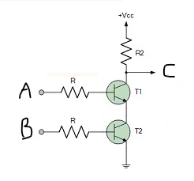

NAND gate
a
b
c
| a | b | c |
|---|---|---|
| off | off | on |
| on | off | on |
| off | on | on |
| on | on | off |
The NAND gate obeys to the following De Morgan's law: (A · B) ≡ (A + B)
Simbology:
- Negation: x == NOT x
- Intersection: · == AND == ∩
- Union: + == OR == ∪
You can express the same meaning with different symbology:
- A ∩ B == A ∪ B
- NOT(A AND B) == (NOT A) OR (NOT B)
- A · B == A + B
-
In JavaScript:
!(A && B) === !A || !B
Try to replace A and B with true and
false and log it. In whichever
way you set A and B, the output will always be true.
The NAND gate is the only component needed to build a computer. When I say computer, I refer to CPU and RAM without peripheral devices. This is possible, because the NAND gate has the property of functional completeness. It means that just by combining NAND gates, you can express all possible truth tables: logical NAND, logical conjunction, logical disjunction, logical equality, exlusive disjunction, logical NOR.
Example
a, b
c
I just wired together a and b, and by reading the table you can understand why it's called NOT gate.
| a, b | c |
|---|---|
| off | on |
| on | off |
For more information about the gates and how they are wired up together to build the computer logic, I suggest the book But How Do It Know?
But how can I build a gate? And what makes a gate a gate?
A gate is made of transistors. Transistors are semiconductor devices that can act as switches or amplifiers. You can build a circuit on a breadboard to simulate the behaviour of a NAND gate inside a microprocessor. Because they can be combined together on an integrated circuit, it is possible to put billions of them in one package.
